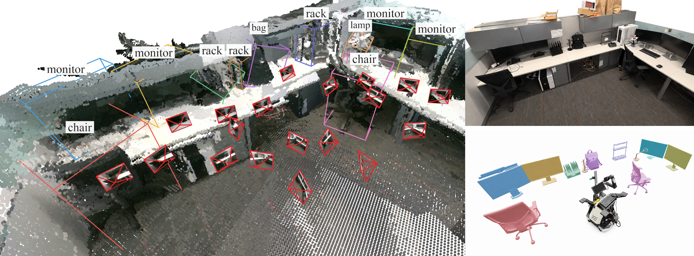
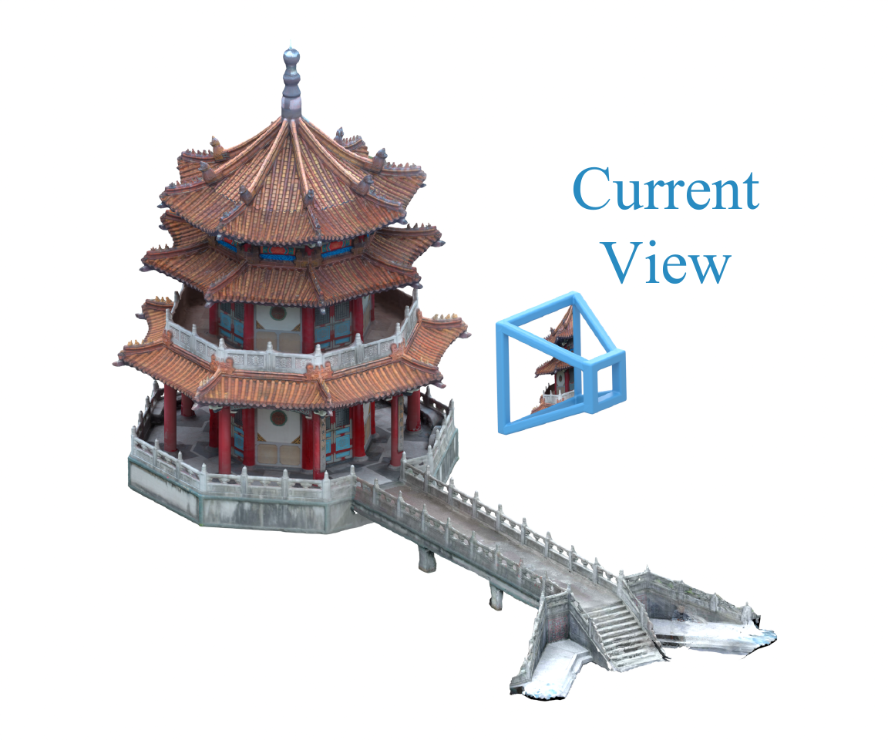
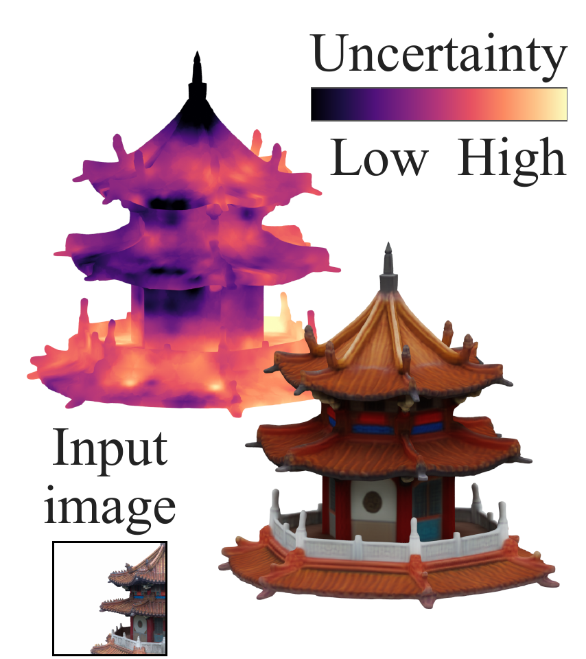
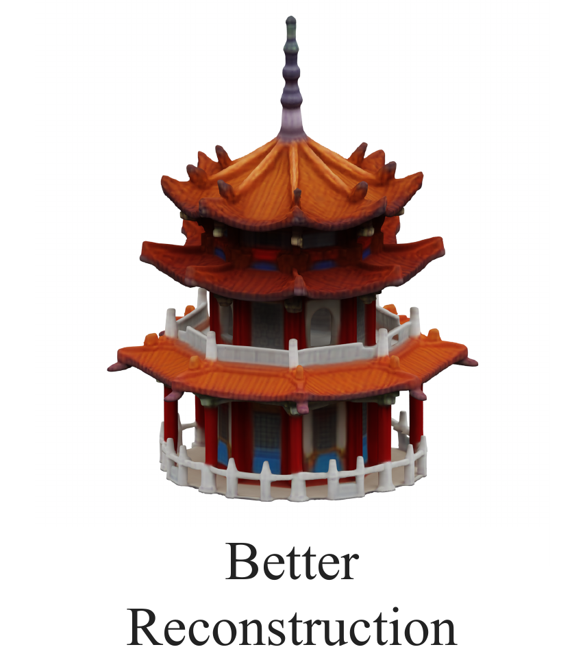
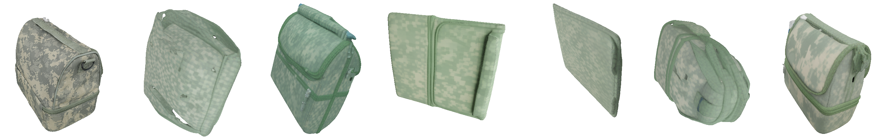
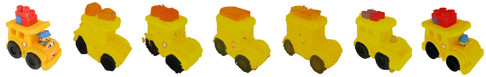
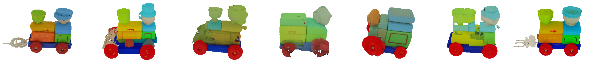
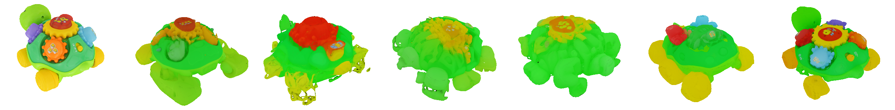

Reason beyond observed surfaces
Generative tokens represent visible and completed geometry, extending uncertainty into unseen regions.
Preprint · 2026
A unified, training-free framework for active view acquisition and keyframe selection.

Presentation
A visual overview of evidence-space reasoning for efficient active 3D reconstruction.
Matisse project video · Watch on YouTube ↗
How can a 3D reconstruction system acquire and retain useful information to understand the geometry of a scene from partial views under a limited computation budget? Existing active view acquisition methods typically estimate uncertainty over observed or instantiated geometry, limiting their ability to reason about unseen structure, while long-horizon reconstruction methods often retain redundant observations.
We introduce Matisse, a training-free framework that unifies active reconstruction and keyframe selection using evidence from a pretrained generative 3D model. Matisse estimates Evidential Uncertainty from cross-attention evidence associated with 3D latent tokens and derives Evidential Information Gain to guide view acquisition and keyframe selection. Occlusion-aware, object-balanced aggregation supports multi-object scenes, while uncertainty propagation through intermediate latents avoids full reconstruction during planning.
Matisse reduces Chamfer distance by 12.7%, 3.8%, and 9.2% on GSO30, YCB-V, and Replica, respectively, relative to the best baseline on each dataset. On GSO30, it achieves a 1.50× end-to-end speedup over the best active reconstruction baseline with the same backend. For keyframe selection, Matisse achieves 18.3% lower Chamfer distance than Stream3D and approaches convergence using roughly 20% as many views.
Generative tokens represent visible and completed geometry, extending uncertainty into unseen regions.
The same information gain selects the next camera and useful frames from long sequences.
Candidate views are scored in evidence space at an amortized 1.26 ms per candidate.
Method at a glance
Matisse interprets view-to-token association weights probabilistically. Evidence at each aligned 3D token gives its posterior uncertainty; candidate cameras are ranked by how much uncertainty they are expected to remove.

A generative model hypothesizes visible and occluded shape.

Weakly supported 3D tokens remain uncertain.
Visible uncertainty and exploration rank cameras.

New evidence updates shape and retained keyframes.
Uncertainty falls as evidence accumulates across retained views. Here t indexes acquired observations and q indexes a 3D token.
A view is informative when it sees many uncertain tokens. This visibility-based score approximates the expected reduction in posterior entropy.
The noisy latent zτ uses denoising time τ, distinct from observation step t; θ denotes the pretrained generator parameters. The Gaussian derivation is understood at fixed denoising time. Its prior mean is μ0 ∈ ℝd, σ2 > 0 is a shared variance scale, I is the d × d identity matrix, and α > 0 is prior pseudo-evidence. A view with zero evidence for a token contributes no likelihood term.
GSO30, YCB-V, and Replica all use exploration penalty λ = 0.5 and prior pseudo-evidence α = 1. Active reconstruction uses five views per object on GSO30 and Replica, and five views per scene on YCB-V.
Experiments
We evaluate sparse-view reconstruction on GSO30, YCB-V, and Replica: single objects, cluttered tabletops, and room-scale environments.
Matisse reconstructs geometry and appearance more faithfully than active-reconstruction baselines.




Quantitative evaluation
All Stream3D-backend methods from Table 1. Runtime is mean ± population standard deviation over 30 objects.
| Method | CD (mm) ↓ | IoU ↑ | P-FID ↓ | Runtime (s) ↓ |
|---|---|---|---|---|
| Random | 62.078 | 0.736 | 48.456 | 16.374 ± 1.566 |
| Occupancy-G | 70.778 | 0.731 | 53.528 | 16.929 ± 1.870 |
| Occupancy-RH | 66.404 | 0.729 | 52.263 | 17.390 ± 1.953 |
| FisherRF | 65.866 | 0.716 | 53.443 | 55.566 ± 4.329 |
| GauSS-MI | 88.676 | 0.686 | 64.831 | 53.878 ± 2.785 |
| GAVIS | 87.598 | 0.687 | 64.394 | 95.679 ± 7.689 |
| MAGICIAN | 63.666 | 0.733 | 50.175 | 23.965 ± 2.626 |
| Matisse-G Ours | 54.167 | 0.765 | 45.354 | 16.023 ± 1.397 |
| Matisse-RH Ours | 56.228 | 0.752 | 48.652 | 16.922 ± 1.714 |
Multi-object reconstruction
All methods from Table 2, grouped by reconstruction backend. Runtime is mean ± population standard deviation over 60 scene runs (12 scenes × 5 initial views), measured per scene.
| Method | CD (mm) ↓ | IoU ↑ | P-FID ↓ | Runtime (s) ↓ |
|---|---|---|---|---|
| Feed-forward | ||||
| TRELLIS.2 | 16.768 | 0.665 | 66.609 | 99.969 ± 31.229 |
| TRELLIS.2+M.D. | 18.357 | 0.634 | 76.751 | 145.346 ± 52.187 |
| SAM3D | 7.043 | 0.869 | 22.561 | 14.513 ± 3.813 |
| 3DGS | ||||
| FisherRF | 18.494 | 0.332 | 137.698 | 109.827 ± 11.961 |
| GauSS-MI | 12.482 | 0.421 | 116.364 | 95.851 ± 9.754 |
| GAVIS | 12.281 | 0.681 | 106.955 | 143.018 ± 20.048 |
| MAGICIAN | 17.515 | 0.636 | 90.056 | 323.777 ± 66.196 |
| Stream3D | ||||
| Random | 6.705 | 0.877 | 21.249 | 88.989 ± 19.424 |
| Occupancy-G | 6.899 | 0.878 | 22.419 | 89.514 ± 20.168 |
| Occupancy-RH | 6.822 | 0.880 | 21.731 | 89.816 ± 20.636 |
| FisherRF | 7.852 | 0.853 | 25.680 | 149.129 ± 20.894 |
| GauSS-MI | 6.731 | 0.877 | 22.039 | 139.062 ± 20.243 |
| GAVIS | 7.286 | 0.867 | 23.875 | 157.075 ± 18.592 |
| MAGICIAN | 7.835 | 0.853 | 25.421 | 92.614 ± 18.342 |
| Matisse-G Ours | 6.451 | 0.885 | 21.450 | 88.435 ± 18.773 |
| Matisse-RH Ours | 6.474 | 0.885 | 21.192 | 91.185 ± 20.347 |
Indoor scenes
All Stream3D-backend methods from the supplementary comparison. Replica uses one-sided Chamfer distance because only partial ground-truth meshes are available.
| Method | CD (mm) ↓ | IoU ↑ | P-FID ↓ | PSNR (dB) ↑ |
|---|---|---|---|---|
| Random | 23.820 | 0.708 | 45.440 | 23.816 |
| FisherRF | 27.301 | 0.713 | 49.320 | 23.843 |
| GauSS-MI | 21.028 | 0.738 | 39.764 | 23.876 |
| GAVIS | 23.395 | 0.715 | 43.508 | 23.789 |
| MAGICIAN | 23.195 | 0.746 | 40.243 | 24.056 |
| Matisse-G Ours | 19.103 | 0.761 | 37.686 | 24.448 |
Keyframe selection
Across 30 GSO30 objects on challenging 100-view casual trajectories, Matisse selects up to eight keyframes. Its fitted convergence plateau has 18.3% lower Chamfer distance than Stream3D and 21.9% lower than Evenly-spaced selection. It approaches convergence using roughly 20% as many views as Stream3D.

Citation
@article{yu2026matisse,
title={Matisse: Evidence-Space Reasoning for Active 3D Reconstruction},
author={Yu, Xihang and Zhou, Kaichen and Shaikewitz, Lorenzo and Jambon, Cl{\'e}ment and Zhan, Xiao and Talak, Rajat and Carlone, Luca},
journal={arXiv preprint arXiv:2609.38746},
year={2026}
}